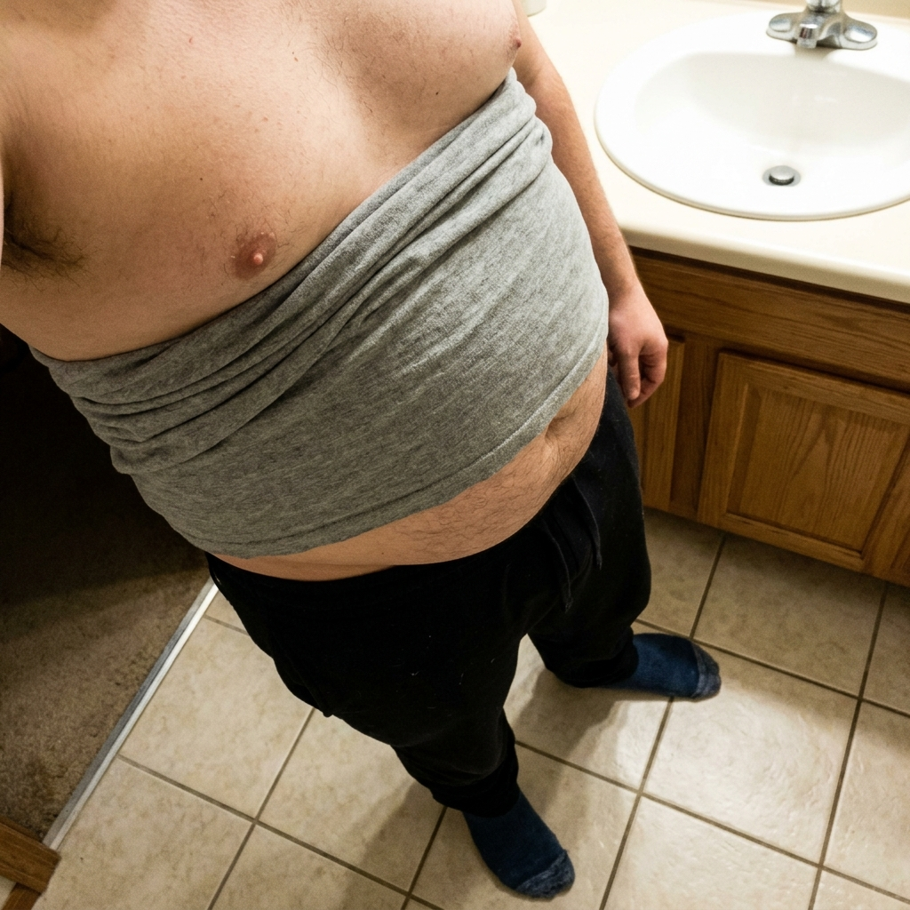
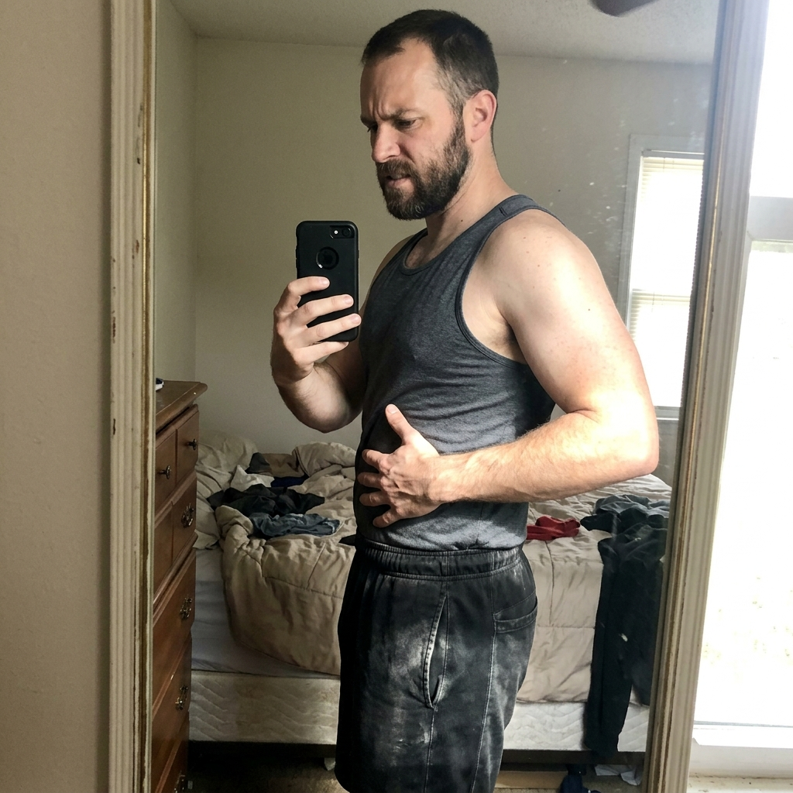
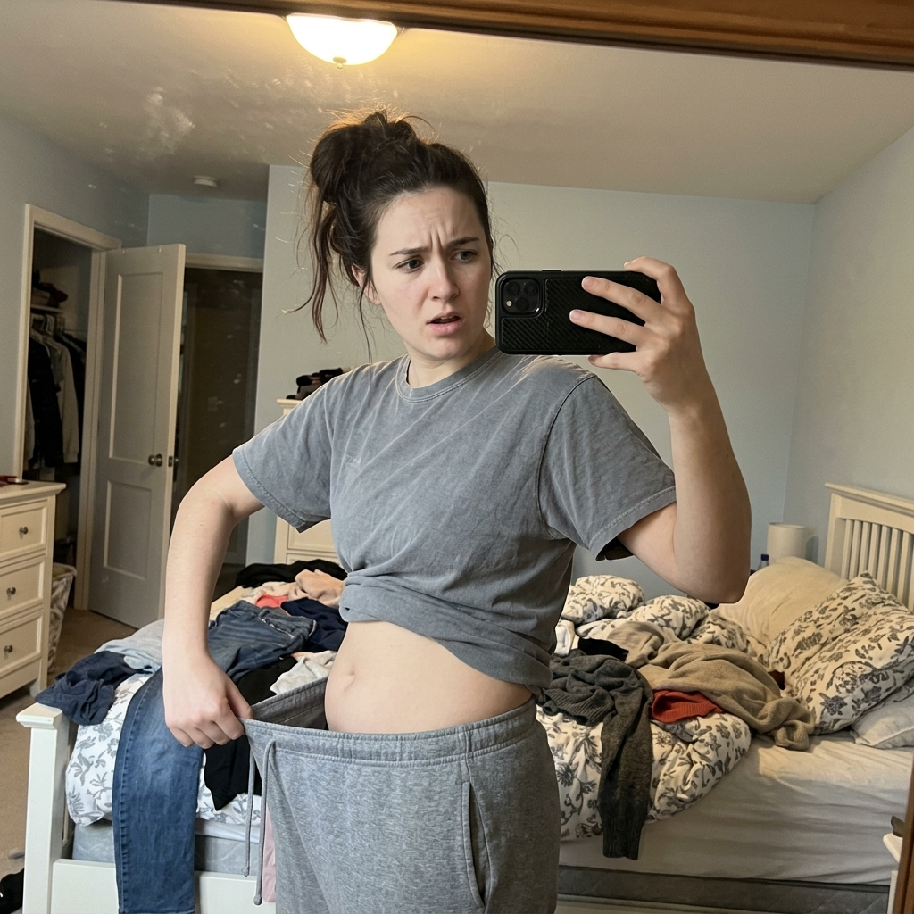
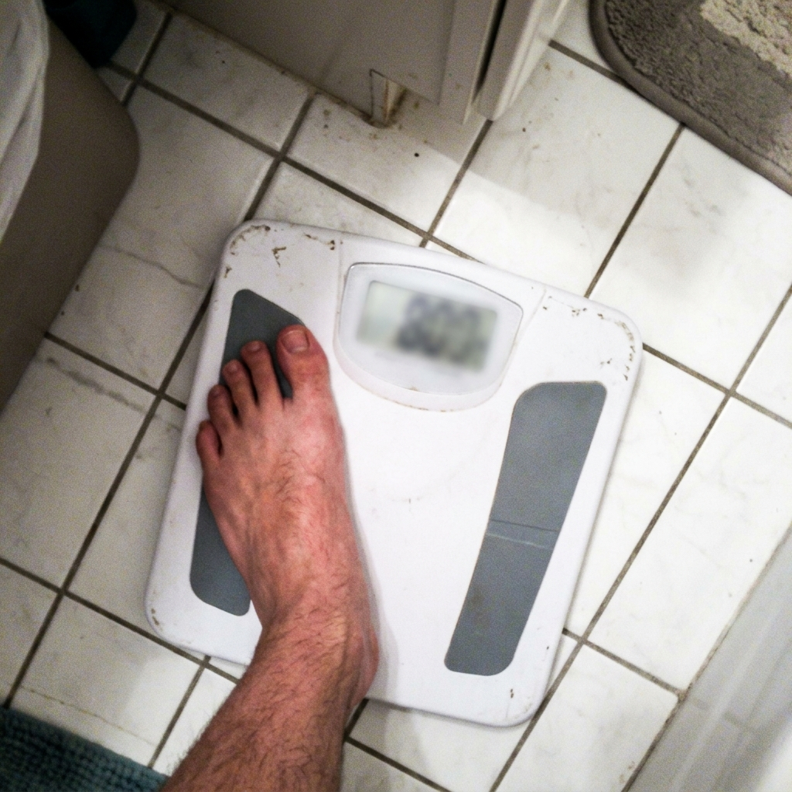

Visão Geral
Produto, evidência e soluções alternativas
✅ Pipeline completo — 3 etapas entregues
Brief (esta página) · 40 hooks · 8 estáticas · 8 ad texts · 3 advertoriais com quiz de qualificação, prontos em ../03-ADVERTORIAIS/:
- ADV1 — Pós-GLP-1 · maior volume de mercado, testar primeiro
- ADV2 — Alcance · o category killer
- ADV3 — Pinch Test · sem hero image até o AD02 ser regerado
Ver _STATUS.md na raiz do produto para o checklist completo de pendências.
Resumo executivo
A tesamorelina é um análogo sintético de GHRH de 44 aminoácidos que age no receptor de GHRH dos somatotrofos da hipófise anterior, estimulando a secreção pulsátil do próprio GH do paciente — e não a reposição de hormônio exógeno. O efeito descendente é elevação de IGF-1.
A tese central é diagnóstica e de localização: o problema não é quanto de gordura a pessoa tem, é onde ela está. A gordura visceral fica atrás da parede abdominal, envolvendo os órgãos. É firme, não se pinça, não responde a déficit calórico do mesmo jeito que a subcutânea, e é a que carrega o risco cardiometabólico.
O diferencial não está em “queimar gordura”, e sim em duas coisas que o mercado inteiro erra: o compartimento (visceral, medido por TC nos ensaios) e o modo de ação (restaurar o sinal, não repor o hormônio).
⚠️ Uso off-label — leia antes de escrever qualquer linha
A tesamorelina é aprovada pela FDA (EGRIFTA, 2010) apenas para redução de gordura abdominal excessiva em pacientes com lipodistrofia associada ao HIV.
Para população não-HIV é off-label e sem evidência de qualidade de registro. Isso precisa ser dito na copy, não escondido — e é justamente o que torna o enquadramento “avaliação médica” honesto em vez de decorativo.
Características
Base de evidência citar sempre com a população do estudo
- Aprovação FDA 2010 — exclusivamente lipodistrofia associada ao HIV
- Redução de VAT de ~15–20% em 6 meses vs placebo, nos ensaios
- Meta-análise de 5 ECRs: redução significativa de VAT (MD = −27,71 cm²) e de gordura de tronco
- Aumento significativo de massa magra observado — direção oposta à dos GLP-1
- Redução de gordura hepática documentada em pessoas com HIV
TAM
- Peptídeos anti-aging: ~$52 bi ao fim de 2025 ⟨verificar⟩
- GLP-1: >$100 bi — cria a categoria e o público que depois busca composição corporal
- Wellness EUA: $2,3 tri → $3 tri até 2030
- VAT elevado escala risco de forma dose-dependente (cálculo biliar: 3,2% → 7,4% → 12,1% → 20,6% por quartil)
Soluções alternativas — por que cada uma falha neste compartimento
💥 A invalidação mais forte do arsenal
Lipoaspiração e CoolSculpting não conseguem tocar gordura visceral — não por serem ruins, mas por anatomia. Isso não é opinião de marketing, é fato estrutural. Use com cuidado e sem depreciar procedimento médico alheio.
🎯 Perfil dominante
Adultos 35–60, com renda de $70K a $200K+, que já investem em saúde e já tentaram resolver composição corporal por conta própria. Skew masculino nos avatares 1, 3, 6 e 7; feminino nos 2 e 5; misto nos 4 e 8.
Não é público de emagrecimento. É público de recomposição e declínio percebido. Muitos têm peso normal ou levemente elevado — a queixa é de formato e localização, não de número na balança.
📍 Localização
🇺🇸 Estados Unidos. Age gate 21+.
💰 Renda
Primário $90K–$200K · já gasta com saúde e performance
Secundário $200K+ · otimizador, painel trimestral
Sweet spot $120K–$250K
⚠️ Diferença estrutural vs Crowned
O registro emocional deste mercado é declínio e identidade física — não vergonha e ocultação, que era o registro do Crowned. O medo não é parecer mal; é o declínio ter começado. Importar o tom errado mata a peça mesmo com a copy “certa”.
8 avatares. Nenhum compartilha Gatilho de Conversão. Clique para expandir.
Ele não é sedentário. Treina antes do trabalho, monitora macros, faz check-up anual. O braço está bom. As pernas estão boas. Mas existe uma barriga que não é mole — é dura. Ela empurra a camisa pra frente mesmo quando ele contrai.
Já cortou carboidrato, fez jejum, aumentou cardio. O peso até desceu. A barriga continuou lá, firme.
O que mais incomoda não é a estética — é a incoerência. Ele faz tudo certo e o corpo responde em todo lugar menos ali.
🔍 Sinais comportamentais
- contrai a barriga em foto sem perceber
- comprou calça um número acima e não contou
- pesquisa “visceral fat” à noite
- já fez ou cogitou InBody/DEXA
- evita camisa social justa
🎯 Motivadores
- entender por que o esforço não converte ali
- coerência entre disciplina e resultado
- não virar “o cara de barriga”
- métrica objetiva, não espelho
⚡ Gatilho de conversão
A gordura que você está tentando perder não é a que está te incomodando. A que te incomoda está atrás da parede abdominal — e nada do que você fez chega lá.
🤐 Won't Tell — vive no BODY do ad
🧠 Can't Tell — vive no MECANISMO EMOCIONAL
Ele não tem medo de estar gordo. Tem medo de que essa seja a primeira prova de que o corpo mudou de time — que saiu do modo construir para o modo deteriorar, e que disciplina não manda mais nisso.
Ethos: Autoridade científica + dado Pathos: Coerência perdida — nível 4 Formato: Advertorial investigativo
Funcionou. Ele perdeu o peso. As roupas serviram. As pessoas comentaram.
E aí olhou no espelho e não gostou. Ficou menor, mas não ficou melhor. O rosto encovou. Os braços perderam forma. E a barriga continuou proporcionalmente ali — agora num corpo menor, o que a deixou mais evidente.
Descobriu depois, lendo, que boa parte do que perdeu não era só gordura. Ninguém tinha avisado.
🔍 Sinais comportamentais
- compara fotos e sente que o “antes” tinha algo melhor
- começou a treinar depois do GLP-1, não antes
- pesquisa “muscle loss Ozempic”
- reduziu ou parou a dose
- teme reganho
🎯 Motivadores
- recuperar forma, não perder mais peso
- não desfazer o que conquistou
- entender o que perdeu além de gordura
- algo que trabalhe na direção oposta
⚡ Gatilho de conversão
O GLP-1 te fez menor. A questão agora não é perder mais — é qual compartimento sobrou, e o que aconteceu com a massa magra.
🤐 Won't Tell — vive no BODY do ad
🧠 Can't Tell — vive no MECANISMO EMOCIONAL
Ela obedeceu à única regra que o mundo dá — emagreça — e descobriu que a regra estava incompleta. Não é fracasso, é tração por informação faltando.
Ethos: Comparativo + cética convertida Pathos: Traição informacional — nível 4 Formato: Advertorial comparativo longo
Ele tem fotos. É esse o problema. Foto de um corpo que era dele, com um nome que ainda é o dele. Jogou bola até os 28, levantou peso sério até os 33. Nunca precisou pensar em dieta.
Aos 42 ainda treina, com menos frequência. E o corpo responde diferente: ganha menos onde quer, acumula mais no meio. A mesma rotina de dez anos atrás agora produz outro resultado.
Ele não desistiu — o retorno é que mudou.
🔍 Sinais comportamentais
- ainda tem a foto antiga salva
- fala do próprio corpo no passado
- compra suplemento com frequência
- testa dietas novas
- evita praia
🎯 Motivadores
- entender a mudança fisiológica
- recuperar resposta ao treino
- não aceitar “é a idade” como sentença
- métrica, não achismo
⚡ Gatilho de conversão
Sua hipófise não quebrou. Ela parou de receber o sinal com a mesma frequência. Isso é diferente — e é onde a tesamorelina age.
🤐 Won't Tell — vive no BODY do ad
🧠 Can't Tell — vive no MECANISMO EMOCIONAL
O corpo era a prova pública de quem ele é. Sem ele, não sabe qual é a evidência da própria identidade — e ninguém percebeu a troca porque ele nunca anunciou.
Ethos: Científico + identificação Pathos: Identidade sem prova — nível 4 Formato: Advertorial de reframe fisiológico
Fez o exame por outro motivo. Um check-up, uma dor, um pacote de longevidade comprado por curiosidade. E veio um número que ninguém explicou: gordura visceral elevada. Ou esteatose hepática.
O médico disse “perca peso” e passou pro próximo assunto. Ele saiu com um dado e sem um plano.
Desde então pesquisa à noite, e cada artigo aumenta a preocupação sem apontar direção.
🔍 Sinais comportamentais
- guardou o PDF do exame
- sabe o próprio número de VAT
- pesquisou “visceral fat dangerous”
- marcou repetir o exame
- mudou algo na dieta por conta
🎯 Motivadores
- um plano em vez de um susto
- alguém que trate o número, não “peso” genérico
- acompanhamento com medição
- reduzir risco, não caber na calça
⚡ Gatilho de conversão
O número que te assustou tem um compartimento específico — e existe protocolo que foi medido nesse compartimento, por tomografia, não por balança.
🤐 Won't Tell — vive no BODY do ad
🧠 Can't Tell — vive no MECANISMO EMOCIONAL
O exame transformou um incômodo estético em fato clínico. Ele não teme a barriga — teme que o número seja o primeiro parágrafo de uma história que já viu acontecer com o pai.
Ethos: Institucional / médico Pathos: Medo herdado — nível 3 Formato: Conservador + FAQ · nunca hook de cura
Ela não mudou nada — essa é a frase que repete. Come igual, se move igual. Mas depois dos 45 o corpo redistribuiu. A balança quase não mexeu. O formato mexeu.
A cintura que sempre existiu deixou de existir. As calças fecham mas ficam diferentes. Ela descreve como “meu corpo virou outro corpo com o mesmo peso”.
O médico disse “é hormonal, é a idade”. Como se fosse sentença e não diagnóstico.
🔍 Sinais comportamentais
- o peso mudou pouco, o manequim mudou
- guardou roupas que fecham mas não caem bem
- pesquisa “menopause belly”
- evita foto de perfil
- usa peça mais solta na cintura
🎯 Motivadores
- explicação que não seja “é a idade”
- reconhecimento de que peso não é a métrica certa
- algo que trate redistribuição, não emagrecimento
⚡ Gatilho de conversão
Seu peso não mudou porque o problema nunca foi peso. Foi realocação — e realocação tem compartimento, mecanismo e medida próprios.
🤐 Won't Tell — vive no BODY do ad
🧠 Can't Tell — vive no MECANISMO EMOCIONAL
Ela sente que está sendo trocada por outra versão de si sem ter sido consultada — e que “é hormonal” é o jeito educado de dizerem que ela não tem recurso.
Ethos: Médico com empatia Pathos: Perda de agência — nível 4 Formato: Advertorial estilo notícia de saúde
Ele já sabe o que é IGF-1. Tem painel de sangue trimestral, anel de sono, talvez já esteja em TRT. Lê estudo, não depoimento. Conhece tesamorelina pelo nome antes de qualquer anúncio.
O que ele quer não é ser convencido — é ser abastecido: dose, protocolo, fonte, farmácia, supervisão. Compara fornecedores e detecta marketing vago em três segundos.
🔍 Sinais comportamentais
- sabe o próprio IGF-1
- já comprou peptídeo antes
- lê PubMed
- compara farmácias de manipulação
- pergunta sobre pureza e ensaio
🎯 Motivadores
- protocolo correto e supervisionado
- fonte confiável e rastreável
- dado mensurável
- não ser tratado como leigo
⚡ Gatilho de conversão
Análogo de GHRH, não GH exógeno. O eixo de feedback continua seu — é essa a diferença que ninguém explica direito.
🤐 Won't Tell — vive no BODY do ad
🧠 Can't Tell — vive no MECANISMO EMOCIONAL
Ele trata otimização como controle, e o corpo é a última variável que ainda não dominou. Cada protocolo novo tenta provar que declínio é opcional se você for inteligente o bastante.
Ethos: Científico puro + rastreabilidade Pathos: Controle sobre declínio — nível 4 Formato: Ficha técnica · não eduque
Ele chegou perto. Pesquisou clínica, pegou orçamento, talvez tenha usado alguns meses. E parou — pelo custo de quatro dígitos por mês, pelo inchaço e formigamento, ou pelo que leu sobre suprimir a produção própria.
Ficou com a sensação de que existe algo ali, mas que o caminho oferecido cobrava caro demais em dinheiro e em autonomia biológica.
🔍 Sinais comportamentais
- tem orçamento de clínica salvo
- pesquisou “HGH suppression”
- conhece alguém que usa
- desconfia de clínica anti-aging agressiva
🎯 Motivadores
- o benefício sem a supressão do eixo
- custo defensável
- poder parar sem colapso
- supervisão real, não venda
⚡ Gatilho de conversão
HGH substitui o hormônio. GHRH pede por ele. Num, seu eixo desliga; no outro, ele continua sendo seu — inclusive o freio.
🤐 Won't Tell — vive no BODY do ad
🧠 Can't Tell — vive no MECANISMO EMOCIONAL
Ele quer intervir sem se entregar. Aceitar HGH seria admitir que o corpo não funciona mais sozinho — e prefere declinar devagar a assinar essa confissão.
Ethos: Comparativo mecanicista Pathos: Autonomia biológica — nível 4 Formato: Advertorial comparativo · mecanismo, nunca promessa igual
O ultrassom apareceu com “esteatose hepática leve a moderada”. Ele nem bebe — ou bebe pouco, o que tornou tudo mais confuso. Perguntou o que fazer e ouviu: perca peso, se exercite, repita em um ano.
Ele não tem sintoma. É esse o incômodo: existe algo acontecendo por dentro que ele não sente e não sabe medir, e a única instrução que recebeu é a mesma que já não funcionava.
🔍 Sinais comportamentais
- guardou o laudo
- pesquisa “fatty liver reverse”
- cortou álcool e frutose
- refez exame por conta
- pergunta em fórum
🎯 Motivadores
- algo direcionado ao fígado, não conselho genérico
- acompanhamento com medição
- agir antes de progredir
⚡ Gatilho de conversão
Gordura hepática e gordura visceral são a mesma história em dois endereços. Os ensaios mediram os dois.
🤐 Won't Tell — vive no BODY do ad
🧠 Can't Tell — vive no MECANISMO EMOCIONAL
Ele descobriu que o corpo pode se deteriorar em silêncio, sem sintoma e sem aviso — e agora não confia mais na ausência de sintomas como sinal de saúde.
Ethos: Institucional / médico Pathos: Desconfiança do próprio corpo — nível 3 Formato: Conservador + FAQ · nunca prometer reversão
O modelo tem duas camadas. Won't Tell é o que ele só diz anônimo, à meia-noite, num fórum — vive no BODY do ad e derruba o ceticismo. Can't Tell é o que ele nem sabe que sente — vive no MECANISMO EMOCIONAL e é o que converte.
Won't Tell — o que ele esconde
Can't Tell — o que ele não sabe que sente
1. A troca de time
Não é medo de engordar. É a suspeita de que o corpo saiu do modo construir e entrou no modo deteriorar — e de que disciplina deixou de ser variável de controle.
2. A prova que sumiu
O corpo era a evidência pública de quem ele é. Sem ela, a identidade continua sendo afirmada sem lastro — e ele sabe disso cada vez que se descreve.
3. A instrução incompleta
Ela obedeceu à única regra que o mundo oferece — emagreça — e descobriu que faltava metade. Não é fracasso, é traição por informação omitida.
4. A reorganização sem consentimento
Depois dos 45, o corpo foi reorganizado sem consulta. “É hormonal” é o jeito educado de comunicar que não há recurso.
5. O silêncio do corpo
Descobrir que algo pode estar errado sem sintoma destrói o único sistema de alerta em que ele confiava: sentir-se bem.
📶 Escada de Profundidade Emocional
Nível 1 — Superfície “Cansado de barriga?” → genérico, ignorado.
Nível 2 — Específica “Aquela barriga que não amolece por mais que você treine.”
Nível 3 — Identitária “Você ainda se descreve como atleta.”
Nível 4 — Não-verbalizável “Não é que você parou de tentar. É que o corpo parou de responder do mesmo jeito.”
Meta de produção: mínimo 40% de cada lote de hooks em nível 3–4.
Mesmo ativo, mesmo mecanismo — 8 códigos emocionais diferentes. Trocar o Ethos ou o Formato entre personas mata o ad mesmo com a copy certa.
👔 1. O Executivo de Barriga Dura
Ethos: Autoridade científica + dado Pathos: Coerência perdida — nível 4 Formato: Advertorial investigativo
💉 2. O Sobrevivente do GLP-1
Ethos: Comparativo + cética convertida Pathos: Traição informacional — nível 4 Formato: Advertorial comparativo longo
🏅 3. O Ex-Atleta
Ethos: Científico + identificação Pathos: Identidade sem prova — nível 4 Formato: Advertorial de reframe fisiológico
📄 4. O do Exame Alterado
Ethos: Institucional / médico Pathos: Medo herdado — nível 3 Formato: Conservador + FAQ · nunca hook de cura
🌸 5. A Redistribuição dos 45+
Ethos: Médico com empatia Pathos: Perda de agência — nível 4 Formato: Advertorial estilo notícia de saúde
🧬 6. O Otimizador
Ethos: Científico puro + rastreabilidade Pathos: Controle sobre declínio — nível 4 Formato: Ficha técnica · não eduque
⚠️ 7. O que Recuou do HGH
Ethos: Comparativo mecanicista Pathos: Autonomia biológica — nível 4 Formato: Advertorial comparativo · mecanismo, nunca promessa igual
🩺 8. O Fígado Gorduroso
Ethos: Institucional / médico Pathos: Desconfiança do próprio corpo — nível 3 Formato: Conservador + FAQ · nunca prometer reversão
⚠️ Erros fatais
- O Otimizador rejeita qualquer coisa que tente educá-lo — ele é Most Aware.
- O do Exame Alterado e O Fígado Gorduroso precisam de disclaimer e compatibilidade — nunca hook de cura.
- O Sobrevivente do GLP-1: jamais criticar, desaconselhar ou sugerir interrupção de GLP-1. É contexto do problema, nunca alvo.
- O que Recuou do HGH precisa de mecanismo diferente, não de promessa igual.
💡 Big Idea
Você não tem um problema de peso. Você tem um problema de endereço.
A gordura que está te envelhecendo é a que você não consegue pinçar — ela fica atrás da parede abdominal, em volta dos órgãos, onde dieta, abdominal, lipo e criolipólise não chegam. A tesamorelina não repõe hormônio: ela restaura o sinal que a hipófise deixou de receber.
Primeira metade devolve esperança e absolve — o esforço não foi insuficiente, foi endereçado ao lugar errado. Segunda metade cria o mecanismo e já separa de HGH.
Teste: tire “tesamorelina” e “Aevra” — a frase continua interessante. ✅ É Big Idea.
🧠 One Belief
- Compartimento importa mais que quantidade — visceral ≠ subcutânea, em risco e em resposta
- O que ele tentou nunca alcançou esse compartimento — anatomia, não falta de esforço
- A hipófise dele não quebrou — parou de receber o sinal com a mesma frequência
- O resultado depende de supervisão, medição e consistência — não de dose
🗡️ MUP — “the fat behind the wall”
PT-BR: “a gordura atrás da parede”. Evite “gordura visceral” como MUP — é o termo técnico, útil para SEO e para o Otimizador, mas não é um vilão batizado.
| Teste | Resultado |
|---|---|
| Nome — repetível de cor? | ✅ visual, anatômico, três palavras |
| Absolvição — tira a culpa? | ✅ “não foi falta de disciplina, foi endereço errado” |
| Invalidação — explica todas as falhas? | ✅ dieta, abdominal, lipo e crio operam à frente da parede |
⛓️ Cadeia causal
- Queda progressiva do eixo GH/IGF-1 com a idade
- Somada a cortisol crônico, sono ruim e resistência à insulina
- O corpo passa a preferir estocar no compartimento visceral
- A gordura se acumula atrás da parede abdominal, em volta dos órgãos
- A balança quase não registra — o formato muda, o peso não
- Ele ataca o que vê: dieta, cardio, abdominal, procedimento estético
- Nada disso alcança o compartimento; o retorno não aparece
- “Faço tudo certo e não funciona” vira prova de que o corpo virou adversário
- A perda deixa de ser de gordura e passa a ser de coerência e identidade
⚙️ Mecanismo do problema — cada vilão fecha uma saída
| Vilão | O que faz | 🎯 Saída que fecha |
|---|---|---|
| Queda do eixo GH/IGF-1 | Menos pulso de GH com a idade | “É só me esforçar mais” |
| Localização atrás da parede | Compartimento inacessível | Mata a categoria estética inteira |
| Cortisol e sono | Direciona estoque pro centro | “Minha dieta é limpa” |
| A balança como métrica errada | Peso estável mascara realocação | “Mas meu peso está bom” |
| Catabolismo amplo do GLP-1 | 20–30% do perdido é massa magra | “Faço Ozempic e resolvo” |
| Supressão do eixo pelo HGH | Repõe e desliga a produção própria | “Tomo GH e pronto” |
| Ausência de medição | Sem TC/DEXA não há como saber | Justifica supervisão e duração |
✅ Mecanismo da solução — Physician-Supervised Visceral Protocol
⚠️ Decisão deliberada de estrutura
Aqui não se usa a “Solução 2.0” do Crowned (batizar um ritual de consumo em vez do produto). Com Classe D, obscurecer o que está sendo vendido aumenta o risco em vez de reduzir. O protocolo é nomeado como clínico, não como ritual.
Etapa 1 — Restaurar o sinal
Tesamorelina é análogo de GHRH: age no receptor dos somatotrofos e pede à hipófise que libere o GH dela mesma, em padrão pulsátil. Não é hormônio exógeno. O eixo de feedback — inclusive o freio — continua do paciente.
Etapa 2 — Endereçar o compartimento profundo
Os ensaios mediram VAT por tomografia, não peso em balança. Redução de ~15–20% em 6 meses vs placebo; MD = −27,71 cm² em meta-análise de 5 ECRs. população: lipodistrofia associada ao HIV
Etapa 3 — Preservar o que foi construído
Nos mesmos ensaios observou-se aumento significativo de massa magra — direção oposta à perda de 20–30% de massa magra associada ao emagrecimento por GLP-1.
💡 Reason why
O argumento não é “peptídeo queima gordura”. É o único mecanismo que age pedindo em vez de repondo, e que foi medido no compartimento que os outros não alcançam. A diferenciação está no modo de ação e no endereço — nunca na intensidade da promessa.
🪜 Hierarquia de revelação
| # | Camada | Revela | Saída que fecha |
|---|---|---|---|
| 1 | Diagnóstica | Barriga firme que não se pinça ≠ gordura comum | “É só barriga” |
| 2 | Anatômica | Ela está atrás da parede, em volta dos órgãos | “Dá pra tirar” |
| 3 | De alcance ⭐ | Tudo que você tentou opera à frente da parede | “Já tentei de tudo” |
| 4 | De sinal (A DESCOBERTA) | GHRH pede o GH; não repõe. O eixo continua seu | “Isso é igual a HGH” |
| 5 | De medição | O desfecho é VAT por imagem, não peso | “A balança não mexeu” |
| 6 | Emocional | O que volta não é a barriga — é a coerência | “É vaidade” |
A camada 3 é o coração da peça, exatamente como no Crowned. Lá era delivery (o que é enxaguado não fica na raiz). Aqui é alcance (o que opera à frente da parede não toca o que está atrás dela).
🏆 Tesamorelina
Papel narrativo: Restaurador do sinal — análogo de GHRH, não GH exógeno.
Claim permitido (Classe D): “Um provedor licenciado avaliará se é clinicamente apropriado.” Citar ensaios sempre com a população estudada.
❌ Nunca escrever
“queima gordura visceral” · “derrete barriga” · “reverte o envelhecimento” · “substitui HGH com segurança” · qualquer promessa de perda em kg, cm ou prazo.
🔬 Como funciona — versão para copy
Análogo sintético de GHRH com 44 aminoácidos → liga no receptor de GHRH dos somatotrofos da hipófise anterior → via cAMP/PKA → liberação de GH em padrão pulsátil fisiológico → elevação descendente de IGF-1.
A palavra que carrega a diferenciação inteira é pulsátil. HGH exógeno produz nível contínuo e suprafisiológico e suprime o eixo. GHRH preserva o ritmo e o freio.
💪 7 Forças Vitais
PRIMÁRIA Propósito e Identidade — o corpo como prova de quem ele é
PRIMÁRIA Autoconfiança — coerência entre esforço e resultado
PRIMÁRIA Longevidade e Sobrevivência — aqui é primária, não moderada
SECUNDÁRIA Energia · Domínio Emocional · Beleza e Masculinidade
MODERADA Foco e Clareza Mental
Diferença vs Crowned: lá a força dominante era Beleza/Feminilidade. Aqui é Longevidade + Identidade. O medo não é parecer mal — é o declínio ter começado.
💖 Benefícios emocionais profundos
Coerência — “faço tudo certo e não converte” → Effort that answers again.
Absolvição — não foi preguiça, foi endereço → You weren’t failing. You were aiming at the wrong fat.
Agência — declínio como variável → Age sets the trend. It doesn’t set the terms.
Autonomia biológica — pedir em vez de repor → Your axis stays yours.
Medida — sair do achismo → Stop arguing with a scale that was never measuring this.
Prova — o lastro da identidade física → Get the evidence back.
🗣️ VOC — Voz do Cliente
⚠️ ⟨verificar⟩ — verbatims ainda não coletados
Os temas abaixo foram inferidos da pesquisa de mercado, não são verbatims reais. Antes de escrever hooks, rodar coleta em r/PeptideGuide, r/Testosterone, r/loseit, r/Ozempic, r/Biohackers, fóruns de longevidade e reviews de clínicas concorrentes.
Um hook construído sobre VOC inferido soa a agência. Sobre VOC real, soa a pessoa. Esta é a maior lacuna do brief.
| Tema | Direção esperada |
|---|---|
| “A balança mente” | Peso estável, formato diferente |
| “Faço tudo certo” | Disciplina sem retorno |
| “Emagreci e piorei” | Pós-GLP-1, aparência deflacionada |
| “Barriga dura” | Não se pinça — o sinal diagnóstico |
| “Meu médico só disse perca peso” | Dado sem plano |
| “Não quero depender” | Medo de supressão do eixo |
“Isso é HGH?”
Não. HGH repõe o hormônio; tesamorelina é análogo de GHRH e pede que a sua hipófise libere o próprio GH, em padrão pulsátil. O eixo de feedback continua seu.
“Já tentei de tudo e nada tira essa barriga.”
Provavelmente tudo o que tentou opera à frente da parede abdominal. Gordura visceral fica atrás dela, em volta dos órgãos. Não é questão de intensidade — é de alcance.
“Minha balança nem se mexe.”
É esperado. Dá para reduzir gordura visceral com pouca variação de peso — por isso o desfecho dos ensaios foi medido por imagem, não em balança.
“Isso é aprovado pela FDA?”
A tesamorelina é aprovada como EGRIFTA para lipodistrofia associada ao HIV. Fora disso é uso off-label, e a preparação manipulada não é aprovada pela FDA. Por isso existe avaliação médica antes.
“É seguro?”
Só um provedor licenciado pode avaliar. Efeitos relatados incluem reações no local da injeção, artralgia, edema e alterações de glicemia/IGF-1. Nem todos os pacientes qualificam.
“E se eu parar?”
Os efeitos sobre gordura visceral tendem a regredir com a descontinuação. Isso é discutido na avaliação — e é motivo para não prometer resultado permanente.
“Quanto tempo?”
Os ensaios avaliaram em 26 semanas. Não prometemos prazo individual. Resultados variam.
“Preciso injetar todo dia?”
Sim, aplicação subcutânea diária. A adesão é parte do que o acompanhamento monitora.
“Posso usar com GLP-1 ou TRT?”
Decisão exclusiva do provedor na avaliação. Nunca ajuste, interrompa ou combine tratamento por conta própria.
| # | Estágio | Mensagem | Frase-âncora |
|---|---|---|---|
| 1 | Most Aware | Fonte, supervisão e protocolo | “GHRH analog, 503A compounding, physician-supervised. Here’s the protocol.” |
| 2 | Product-Aware | Legitimidade e supervisão | “The difference isn’t the peptide. It’s whether a licensed provider is watching the labs.” |
| 3 | Solution-Aware | Sinal vs reposição | “HGH replaces the hormone. GHRH asks for it. Your axis stays yours.” |
| 4 | Problem-Aware | Educação: compartimento | “If your belly is firm and you can’t pinch it, you’re not fighting the fat you think you are.” |
| 5 | Unaware | Nomear com um teste | “Stand up and try to pinch your belly. What happens next tells you which fat you have.” |
⭐ Teste de consciência — The Pinch Test
Fique de pé. Tente agarrar a barriga com a mão.
Se vier um punhado mole — é gordura subcutânea, a que todo mundo discute.
Se estiver firme, empurrando pra fora, e quase não der pra pinçar — é a outra. A que fica atrás da parede.
Gratuito, imediato, binário, e verificável em 5 segundos. É o equivalente ao teste do elástico do Crowned — e o ativo mais forte para os estágios 4 e 5.
⚖️ Classe D — prescrição / telessaúde
Com componente manipulado não aprovado pela FDA. Ficha completa em 00-COMPLIANCE/ficha-de-classe.md.
✅ Obrigatório em toda peça
- Not all patients will qualify
- Treatment only after a comprehensive medical evaluation
- Compounded preparations are not FDA-approved
- Not medical advice — consult a qualified provider
- Individual results vary
- 21+
❌ Proibido
- Promessa de kg, cm ou prazo
- Before/after corporal
- Desaconselhar ou criticar tratamento alheio (GLP-1 incluso)
- Sugerir dose ou protocolo específico
- Hook de cura para os avatares 4 e 8
Canais
| Canal | Viabilidade |
|---|---|
| E-mail e SEO | ✅ o mais realista para este perfil de oferta |
| Native (Taboola/Outbrain) | ⚠️ viável com aprovação editorial |
| ⚠️ exige certificação de saúde/farmácia (LegitScript) | |
| Meta | ⚠️ altamente restrito — saúde pessoal + prescrição |
| TikTok | ❌ praticamente inviável |
🚩 Item nº1 para o jurídico da Aevra
O site-mãe declara “treatment is only initiated after a comprehensive medical evaluation”, mas a loja vende vials de tesamorelina direto, com cupom 20OFF e checkout.
Os dois fluxos exigem copy diferente e carregam exposição diferente. Toda a copy deste brief foi escrita para funcionar nos dois — o CTA leva à avaliação/qualificação e nunca promete dispensação sem prescrição. Confirmar antes de publicar.
Os 8 long text ads da etapa 2, em blocos narrativos rotulados (EN-US — Classe D não usa variante PT-BR até revisão jurídica). Mesmo texto da aba Long Text Ads, aqui com a anatomia visível para calibrar o próximo lote.
AD 1 · ENDEREÇO · Avatar: O Executivo de Barriga Dura
There are two kinds of belly fat. Most men spend a decade fighting the one that was never the problem.
There are two kinds of belly fat. Most men spend a decade fighting the one that was never the problem.
If your arms and legs respond to training but your midsection never moves, the issue may not be how hard you're working. It may be where the fat is sitting.
I'm 47. I train four mornings a week and I've tracked my food for six years.
My arms changed. My legs changed. My shoulders changed. The middle never did.
And it wasn't soft. That's the part nobody warned me about. When I sat down it folded forward like something with structure in it. When I stood up it pushed the shirt out even with everything pulled in.
I cut carbs. I did eighteen-hour fasts. I added cardio, then subtracted cardio and added lifting. The scale moved a few pounds. The shape of my stomach did not move at all.
What got to me wasn't the mirror. It was the incoherence. I had built an entire adult life on the idea that effort converts into result. My body was responding everywhere except one place, and I had no explanation for it.
Then a physician explained something that reorganized the whole thing for me: there isn't one kind of belly fat. There are two, and they live in different places.
Subcutaneous fat sits under the skin. You can grab it. Visceral fat sits behind the abdominal wall, wrapped around the organs. You can't grab it. You can't reach it. It's on the other side of the muscle.
That single fact explained everything that had confused me. A firm belly that pushes outward instead of hanging soft is the signature of the second kind. And every method I'd used — the deficits, the cardio, the crunches — operates in front of that wall.
I wasn't failing. I was aiming at the wrong fat.
What I didn't know is that this compartment has been studied specifically — not as "belly fat," but as its own measurable thing, scanned by CT rather than weighed on a scale.
I'll be straight about the limits, because I went and read it myself. The compound in question is FDA-approved, but for one specific patient population — not for general body composition. Outside that indication it's off-label. The compounded version isn't FDA-approved at all. That's exactly why it runs through a licensed provider instead of a shopping cart.
So I stopped asking "how do I lose more weight" and started asking a better question: which compartment am I actually dealing with, and is there a protocol built for it?
Aevra Health runs that evaluation. A licensed provider reviews your history and determines whether a physician-supervised protocol is clinically appropriate for you.
You may not have a discipline problem. You may have an address problem.
Take the assessment and find out which one it is.
AD 2 · QUALIFICAÇÃO (The Pinch Test) · Avatar: O Executivo / A Redistribuição 45+
Stand up and try to pinch your stomach. That five-second answer matters more than your weight does.
Stand up and try to pinch your stomach. That five-second answer matters more than your weight does.
It sounds like nothing. It's the fastest way to find out which of the two kinds of belly fat you're actually carrying — and they don't respond to the same things.
I'm 44. I found out about this test from a physician, not from the internet, and it cost me nothing.
Here's the whole thing.
Stand up. Lift your shirt. Try to grab the skin and fat over your stomach between your thumb and your fingers.
If you come away with a soft handful, that's subcutaneous fat. It sits under the skin. It's the fat everybody writes about, and it's the fat that responds most predictably to a deficit.
If your fingers barely close on anything — if the stomach is firm, taut, pushing outward rather than hanging — that's the other kind. It sits behind the abdominal wall, around the organs. It isn't under your skin. It's on the other side of the muscle.
I did the test in a bathroom mirror and got almost nothing between my fingers. I'd spent six years assuming a hard stomach meant I was closer than I was.
It also explained the part that never made sense. Crunches sit on the wrong side of the muscle. Liposuction and cryolipolysis physically cannot reach past the abdominal wall — that isn't a criticism of those procedures, it's just where they operate.
The test doesn't diagnose anything. It's a rough signal, not a scan. Two people can get the same result and have completely different situations. What it does is tell you which question to start asking.
Mine turned out to be the second kind. That put me in a completely different conversation than the one I'd been having with myself for six years.
There is a compound that was studied specifically against that compartment, measured by CT scan rather than by scale. It's FDA-approved for one specific patient population — not for general body composition — so outside that indication it's off-label, and a licensed provider has to decide whether it makes sense for you at all. Plenty of people don't qualify.
Aevra Health runs that assessment.
Do the pinch test first. Then, if the answer surprised you, see whether you qualify.
AD 3 · ALCANCE (o category killer) · Avatar: O Ex-Atleta
Liposuction can't reach it. CoolSculpting can't reach it. Crunches are on the wrong side of the muscle.
Liposuction can't reach it. CoolSculpting can't reach it. Crunches are on the wrong side of the muscle.
This isn't a criticism of any of those. It's anatomy — and once someone explains where the fat actually sits, everything that didn't work starts making sense.
I'm 43. I played competitively until 28 and lifted seriously until 33. I never had to think about my midsection once.
Now I train less, but I still train. And the same work that used to produce a result produces a different one. I gain less where I want it and accumulate more in the middle. Nothing about my effort changed. The return did.
By the time I was 41 I'd tried a genuine handful of approaches for my midsection — a procedure, a device, a couple of different training protocols. I want to be careful how I say this, because the practitioners were competent and honest with me about what they do.
What none of it addressed was location.
There are two fat compartments in the abdomen. Subcutaneous fat sits under the skin, in front of the abdominal wall. Visceral fat sits behind that wall, packed around the organs.
Now line up the methods against that.
Liposuction removes fat from under the skin. It works in front of the wall. Cryolipolysis cools fat through the skin — also in front of the wall. Crunches strengthen the muscle that is the wall; they don't reduce what's stored behind it, and there's no such thing as spot reduction anyway.
Every one of those does the thing it says it does. None of them is physically capable of operating on the other side of that muscle. That isn't marketing. It's where the tissue is.
Understanding that didn't fix my body. It fixed something else. I'd been walking around with a quiet theory that my body had turned adversarial — that discipline had stopped counting. Turns out I'd been reaching for something that was never within reach.
Visceral fat has been studied as its own target. In the clinical work, it wasn't measured on a scale — it was measured by CT scan, because a compartment can shrink while total body weight barely moves.
The compound studied against it is a GHRH analog. It doesn't replace a hormone. It signals the pituitary to release your own growth hormone in its natural pulsatile rhythm, which is a meaningfully different approach from exogenous growth hormone.
And the honest limits: it's FDA-approved for one specific patient population, not for general body composition. Outside that indication it's off-label, and the evidence in the general population isn't registration-grade. The compounded preparation isn't FDA-approved. That's the actual reason a licensed provider has to evaluate you first, and the reason plenty of people are told no.
Aevra Health runs that evaluation — history, labs where appropriate, and a determination of whether a physician-supervised protocol is clinically suitable.
You probably weren't under-trying. You were working in front of a wall.
See whether you qualify.
AD 4 · SINAL vs REPOSIÇÃO · Avatar: O que Recuou do HGH / O Otimizador
HGH replaces the hormone. A GHRH analog asks your pituitary for it. That difference is the entire decision.
HGH replaces the hormone. A GHRH analog asks your pituitary for it. That difference is the entire decision.
If you've been quoted for growth hormone and hesitated, this is probably the distinction you were circling without having a word for.
I'm 51. I got the quote. I sat in my car in the parking lot and never went back in.
It wasn't the money, though the money was real — four figures a month, indefinitely.
It was a sentence I'd read the week before and couldn't put down: when you supply the hormone from outside, the system that produces it stops being asked to. And what stops being asked tends to stop answering.
That felt like a one-way door. I wanted to intervene. I didn't want to hand over the keys.
Here's the distinction nobody explained to me clearly, and it took a physician about ninety seconds.
Your pituitary releases growth hormone in *pulses* — bursts through the day and night, with quiet periods in between. That rhythm is not incidental. Your body reads the pattern, not just the amount.
Exogenous HGH doesn't reproduce a pattern. It supplies a level. The result is a more continuous, often supraphysiologic exposure, and the feedback loop that governs your own production responds to that accordingly.
A GHRH analog works a step earlier in the chain. GHRH is the signal — the message the hypothalamus sends telling the pituitary to release. A GHRH analog binds the GHRH receptor on the pituitary and asks for a release.
The hormone that comes out is yours. The rhythm is yours. And critically, so is the brake — the feedback loop that governs the whole system stays intact, because you haven't bypassed it.
Tesamorelin is that kind of analog. A 44-amino-acid synthetic GHRH analog that acts on the pituitary GHRH receptor.
It's the compound with actual randomized controlled trial data against visceral fat specifically — measured by CT scan, not by scale, because the compartment can change while body weight barely moves. A meta-analysis of five RCTs found significant reduction in visceral adipose tissue and trunk fat, alongside a significant increase in lean body mass.
Now the part that has to be said plainly, because you'll find it anyway.
That trial data comes from one specific patient population — people with HIV-associated lipodystrophy. That's the only indication the FDA approved it for, back in 2010. Use outside that indication is off-label, and there is no registration-grade evidence in the general population. The compounded preparation is not FDA-approved.
If someone presents this to you as a proven general anti-aging protocol, they're going past the evidence.
What that means practically: this isn't a purchase decision, it's a clinical one. A licensed provider has to look at your history and decide whether it's appropriate. Not everyone qualifies, and being told no is a normal outcome.
Aevra Health is a physician-supervised telehealth platform. Compounded preparations, when individually clinically justified, are dispensed by a US-licensed 503A compounding partner.
You didn't say no to the price. You said no to the surrender. This is a different question.
See whether you qualify.
AD 5 · IDENTIDADE · Avatar: O Ex-Atleta / O Executivo
I still call myself an athlete. I haven't been one in twelve years. I hear it every time I say it.
I still call myself an athlete. I haven't been one in twelve years. I hear it every time I say it.
If you've noticed the same gap between the way you describe your body and the body you actually have, this is about what happened in between.
I'm 45. There's a photo on my phone from a tournament in 2013 that I've never deleted.
I don't look at it often. But I know where it is, which is worse.
The change didn't arrive. It accumulated. A notch on the belt. A shirt that sat differently. Then the habit I didn't notice forming for two years: contracting my stomach in photographs. Every photograph. Including the ones with my kids.
You do that long enough and it stops being a decision.
Here's the part I couldn't explain to anyone, including my wife.
It isn't vanity. I don't care about being admired. What bothers me is that my body used to be the evidence. It was the thing that made the claim true without my having to say it. Now I make the claim out loud and there's nothing standing behind it.
I didn't lose the shape. I lost the proof.
For about three years I told myself the mature version: this is what happens, everyone slows down, be reasonable. I said it in a tone that sounded like acceptance. It wasn't acceptance. I'd just stopped having anyone to ask.
What eventually changed wasn't motivation. It was one piece of information from a physician.
Growth hormone is released in pulses, and that pulsatile signalling declines with age. It isn't that the pituitary breaks. It's that it gets asked less often.
And the fat that accumulates in the middle under those conditions isn't the kind you can grab. It sits behind the abdominal wall, around the organs. Firm, not soft. Which is exactly why it didn't respond to anything I threw at it — I was working in front of a wall it lives behind.
That reframed four years of quiet self-accusation. It wasn't that I stopped trying. My body stopped answering the same way, and nobody told me when the terms changed.
I'm not going to tell you there's a fix that gives you 2013 back. There isn't, and anyone selling that is lying to you. What there is: a compound studied specifically against that compartment, FDA-approved for one narrow patient population and off-label outside it, that a licensed provider either determines is appropriate for you or doesn't.
Aevra Health runs that evaluation. Plenty of people don't qualify.
If you've been describing a body you no longer have, it's worth finding out which conversation you're actually in.
AD 6 · PÓS-GLP-1 · Avatar: O Sobrevivente do GLP-1
I lost forty pounds and I look worse. I can't say that out loud because everyone keeps congratulating me.
I lost forty pounds and I look worse. I can't say that out loud because everyone keeps congratulating me.
If you came off a GLP-1 smaller but somehow softer — flatter in the face, still round in the middle — you're not imagining it, and the explanation isn't a personal failure.
I'm 41. I was on a GLP-1 for fourteen months and it did exactly what it was supposed to do.
The weight came off. My bloodwork improved. My knees stopped hurting on stairs. I'd do it again.
And then I stood in front of the mirror one morning holding the waistband of jeans that now had four inches of slack in them — and my stomach was still pushing out against my shirt.
Smaller everywhere. Same shape in the middle. Hollower in the face.
The strangest part is that you can't say any of it. People are congratulating you. Your mother is congratulating you. And you're standing there thinking this isn't what I thought I was buying, and there's no socially acceptable moment to say it.
Here's what I eventually found, and it wasn't hidden — it was in the research the entire time.
In rapid weight loss, a meaningful share of what comes off isn't fat. Estimates generally put lean mass at roughly twenty to thirty percent of total weight lost.
That number was never a secret. It just wasn't part of the conversation anyone was having with me.
And weight loss is not compartment-selective. Losing total mass doesn't specifically target the fat sitting behind the abdominal wall, around the organs — which is the fat that changes your silhouette from the inside and the one you can't pinch.
Which is why the picture can be: smaller number, less lean mass, same firm middle.
I followed the instruction. Nobody told me the instruction was incomplete.
So the question I'm in now isn't how to lose another twenty pounds. It's what's left, and in which compartment.
There's a compound studied specifically against visceral fat — measured by CT scan rather than by scale, because that compartment can change while weight barely moves. In the trial data it reduced visceral adipose tissue while lean body mass went up. Directionally the opposite of what rapid weight loss does.
The honest limits, because I checked: that data comes from one specific patient population, it's the only FDA-approved indication, and outside of it this is off-label with no registration-grade evidence. The compounded version isn't FDA-approved. It's a clinical decision, not a shopping decision.
And to be clear — none of this is a reason to stop or change anything you're currently taking. That is between you and your prescriber, full stop.
Aevra Health evaluates whether a physician-supervised protocol is clinically appropriate. Not everyone qualifies.
If you got smaller and it didn't land the way you expected, find out what's actually left.
AD 7 · A MÉTRICA ERRADA · Avatar: A Redistribuição dos 45+
Same weight as at forty. Different body entirely. Why the scale was never measuring the thing that changed.
Same weight as at forty. Different body entirely. Why the scale was never measuring the thing that changed.
Women describing this to physicians are routinely told it's hormonal and left there. The word is accurate. As an answer, it's incomplete — and the missing half is a matter of measurement.
The account repeats with unusual consistency.
Nothing changed. The diet is the same. The activity is the same. The number on the scale has barely moved in a decade. And yet the waist that always existed has stopped existing. Trousers close but sit differently. As one woman put it: the same weight became a different body.
The clinical response is usually two words — "it's hormonal" — delivered as though it were a conclusion rather than a starting point.
The part that's usually left out is that body fat is not one thing in one place.
Subcutaneous fat sits under the skin, in front of the abdominal wall. You can pinch it.
Visceral fat sits behind that wall, packed around the organs. You cannot pinch it. It's firm rather than soft, and it changes the silhouette by pushing outward from the inside.
Through the hormonal transition around and after menopause, storage preference can shift toward that deeper compartment. Total mass may hold steady while the distribution reorganizes.
Which produces the exact combination women keep reporting and struggling to name: *same weight, different shape, same habits.*
A bathroom scale reports a single total. It has no way to distinguish where that mass sits. It was never capable of measuring the variable that actually changed.
This is not a rhetorical point. It's how the research is conducted.
Clinical trials targeting visceral fat don't use scales. They use CT imaging, because the compartment can shrink measurably while total body weight moves very little. Visceral adipose tissue is also a more direct basis for metabolic risk than BMI or waist circumference — which is part of why the imaging distinction matters clinically and not only cosmetically.
One compound has randomized controlled trial data specifically against that compartment: a synthetic GHRH analog that signals the pituitary to release the body's own growth hormone in its natural pulsatile pattern, rather than supplying hormone from outside. A meta-analysis of five trials found significant reduction in visceral adipose tissue and trunk fat, alongside an increase in lean body mass.
The limits are specific and worth stating plainly. That evidence comes from one patient population — people with HIV-associated lipodystrophy — which is the sole FDA-approved indication, granted in 2010. Any other use is off-label, without registration-grade evidence. Compounded preparations are not FDA-approved.
Which is why this runs through clinical evaluation rather than a checkout page. A licensed provider reviews history and determines suitability. Many people are told it isn't appropriate for them.
Aevra Health, a physician-supervised telehealth platform, conducts that assessment.
"It's hormonal" describes the cause. It was never meant to be the end of the conversation.
See whether you qualify for an evaluation.
AD 8 · DESCOBERTA · Avatar: O do Exame Alterado / O Fígado Gorduroso
In 2010 the FDA approved a compound to reduce deep abdominal fat. For one specific patient population. Almost nobody outside it has heard of it.
In 2010 the FDA approved a compound to reduce deep abdominal fat. For one specific patient population. Almost nobody outside it has heard of it.
If a scan gave you a number nobody explained, this is the piece of context that was missing — including the part about what the approval does and doesn't cover.
I'm 49. I got a body composition scan as part of a check-up package I bought mostly out of curiosity.
It came back with elevated visceral adipose tissue and mild hepatic steatosis.
I asked what to do about it. I was told to lose weight, exercise, and repeat the scan in a year.
I left with a fact and no plan. I don't have symptoms. That's the part that unsettled me — something was happening that I couldn't feel and couldn't track, and the only instruction I got was the one that already wasn't working.
So I did what everyone does. I read at night. Every article raised the concern and none of them pointed anywhere.
What I eventually understood is that visceral fat isn't a vaguer version of body fat. It's a distinct compartment — behind the abdominal wall, around the organs — and it's studied as its own target, measured by imaging rather than by weight.
And there's a compound with randomized controlled trial data against it: tesamorelin, a synthetic GHRH analog.
It doesn't supply growth hormone. It signals the pituitary to release your own, in the pulsatile pattern the body normally uses. Across five randomized controlled trials, meta-analysis found significant reduction in visceral adipose tissue and trunk fat, with an increase in lean body mass. Reductions in liver fat have also been documented in that population.
Now the limits, stated as plainly as I can, because this is exactly the kind of thing that gets oversold.
The FDA approval covers *one indication*: reduction of excess abdominal fat in patients with HIV-associated lipodystrophy. That's the population every one of those trials studied. Use in anyone else is off-label, and there is no registration-grade evidence in the general population. Compounded preparations are not FDA-approved.
If you see this described as an approved anti-aging treatment, that description is wrong.
*Does this replace what my doctor is doing?* No. Nothing here is a substitute for the care you're already under, and no one should stop, change or combine treatment on their own.
*Will it change my scan?* Nobody can tell you that, and you should be skeptical of anyone who does.
*Am I a candidate?* That's the actual question, and it isn't answered by an ad. A licensed provider reviews your history, and a substantial number of people are told this isn't appropriate for them.
*What about side effects?* Reported effects include injection site reactions, joint pain, swelling, and changes in blood glucose and IGF-1. That's part of what the evaluation weighs.
Aevra Health is a physician-supervised telehealth platform. Compounded preparations, when individually clinically justified, are dispensed through a US-licensed 503A compounding partner.
If a scan handed you a number and no plan, the next step is an evaluation — not a purchase.
40 hooks · 8 ângulos × 5 padrões · 95%% em Pathos 3–4. Clique no ícone para copiar.
o problema não é quanto de gordura você tem, é onde ela está · Avatar: O Executivo de Barriga Dura · **Estágio:** 4–5
There are two kinds of belly fat. You've been fighting the one that was never the problem.
I did everything right for four years. My arms changed. My legs changed. The middle never moved. It took me that long to find out I was aiming at the wrong fat.
I'm the fat behind your abdominal wall. You've never touched me. Not with the diet, not with the cardio, not with the six a.m. workouts. I'm not where your hands go.
Soft belly you can grab? That's one kind. Firm belly that pushes out and won't pinch? That's the other one. They don't respond to the same things.
Every fat-loss plan you've ever bought was written about the fat you can see. Nobody sells a plan for the fat sitting behind the wall.
um teste de 5 segundos diz qual gordura você tem · Avatar: O Executivo de Barriga Dura · A Redistribuição dos 45+ · **Estágio:** 4–5
Stand up right now and try to pinch your belly. If you can't get a handful, keep reading. That answer matters more than your weight does.
Before you start another cut, do the pinch test. Five seconds. If your stomach is firm instead of soft, you've been solving the wrong problem.
A soft belly and a hard belly are not the same condition. Most people never learn there's a difference, and spend a decade treating one like the other.
My belly is hard. Everyone online talks about pinching an inch. Mine doesn't pinch. I assumed that was good news for about six years.
Your hands can only reach one of them. That's the whole reason the mirror keeps disagreeing with your effort.
tudo que você tentou opera à frente da parede abdominal · Avatar: O Executivo · O Ex-Atleta · **Estágio:** 2–3
Liposuction cannot reach it. CoolSculpting cannot reach it. Crunches are on the wrong side of the muscle. This isn't an opinion about those procedures — it's anatomy.
Visceral fat sits behind your abdominal wall, wrapped around your organs. Every method you've paid for works in front of that wall. That's the entire story.
I paid for procedure after procedure on my midsection. Not one of them was physically capable of touching what was actually bothering me. Nobody told me that beforehand.
There's a wall of muscle between your hands and the fat that's changing your shape. Everything you've tried stopped at that wall.
If your stomach is firm and pushes outward, the fat is behind the muscle — not under the skin. Different location. Different rules.
GHRH pede o hormônio; HGH substitui o hormônio · Avatar: O Otimizador · O que Recuou do HGH · **Estágio:** 1–3
HGH replaces the hormone. A GHRH analog asks your pituitary for it. In one, your axis shuts down. In the other, it stays yours — brake included.
I got the HGH quote, sat in my car in the parking lot, and never went back in. Not because of the money. Because it felt like a one-way door.
If you've been quoted for growth hormone and hesitated, the word you were looking for is pulsatile. It's the difference between the two approaches.
A thousand dollars a month to switch off the system you were born with. That's the offer most clinics are making and nobody says it out loud.
Your pituitary didn't break. It stopped being asked as often. Those are different problems with different answers.
o corpo era a prova de quem você é · Avatar: O Ex-Atleta · O Executivo · **Estágio:** 3–5
I still call myself an athlete. I haven't been one in twelve years. I hear it every time I say it out loud.
I contract my stomach in every photo. Even the ones with my kids. I've done it so long I don't notice anymore.
It isn't that you stopped trying. It's that your body stopped answering the same way — and nobody explained when the terms changed.
You didn't lose the shape. You lost the proof. Those feel the same from the outside and they are not the same thing.
You bought the next size up and told nobody. Not your wife. Not your training partner. That silence is the actual symptom.
você ficou menor, mas o que sobrou não é o que você esperava · Avatar: O Sobrevivente do GLP-1 · **Estágio:** 3–4
I lost forty pounds and I look worse. I can't say that out loud because everyone keeps congratulating me.
Twenty to thirty percent of what comes off during rapid weight loss isn't fat. That number was in the research the whole time. It just wasn't in the conversation.
Smaller, but softer. Smaller, but flatter in the face. If that's where you landed, the next question isn't how to lose more.
You followed the instruction. Nobody told you the instruction was incomplete.
Before you chase another twenty pounds, find out what's left. Weight was never the measurement that mattered here.
a balança nunca mediu a coisa que mudou · Avatar: O do Exame Alterado · A Redistribuição dos 45+ · **Estágio:** 2–4
Your scale has never once measured the thing that's actually changing your shape. It reports a total. The problem is a location.
The scale says I weigh what I weighed at forty. Nothing about my body is the same. I've never been able to explain that without sounding vain.
The clinical trials didn't weigh anyone. They ran CT scans, because the compartment they were measuring doesn't register on a bathroom scale.
Same weight, different shape, same habits. That combination has a name, and it isn't willpower.
You've been arguing with a number that was never measuring this.
existe um aprovado pela FDA que quase ninguém conhece fora de uma indicação · Avatar: O do Exame Alterado · O Otimizador · O Fígado Gorduroso · **Estágio:** 1–4
In 2010 the FDA approved a compound to reduce deep abdominal fat — for one specific patient population. Outside of that indication, almost nobody has heard of it.
The trials measured one compartment, by CT scan, over twenty-six weeks. Not weight. Not inches. One compartment.
Ask your doctor what GHRH does and watch what happens. Most of the answer isn't in the fat-loss conversation at all.
Three things I wish I'd known before paying for procedure after procedure on my midsection: fat has compartments, procedures have a reach limit, and one of them was studied by scan.
I found it in a study about a completely different condition. That's the only reason I know it exists.
8 anúncios long-form, um por ângulo · 4.855 palavras no total. O botão copia o texto limpo, sem os rótulos de bloco.
AD 1
There are two kinds of belly fat. Most men spend a decade fighting the one that was never
There are two kinds of belly fat. Most men spend a decade fighting the one that was never the problem.
If your arms and legs respond to training but your midsection never moves, the issue may not be how hard you're working. It may be where the fat is sitting.
I'm 47. I train four mornings a week and I've tracked my food for six years.
My arms changed. My legs changed. My shoulders changed. The middle never did.
And it wasn't soft. That's the part nobody warned me about. When I sat down it folded forward like something with structure in it. When I stood up it pushed the shirt out even with everything pulled in.
I cut carbs. I did eighteen-hour fasts. I added cardio, then subtracted cardio and added lifting. The scale moved a few pounds. The shape of my stomach did not move at all.
What got to me wasn't the mirror. It was the incoherence. I had built an entire adult life on the idea that effort converts into result. My body was responding everywhere except one place, and I had no explanation for it.
Then a physician explained something that reorganized the whole thing for me: there isn't one kind of belly fat. There are two, and they live in different places.
Subcutaneous fat sits under the skin. You can grab it. Visceral fat sits behind the abdominal wall, wrapped around the organs. You can't grab it. You can't reach it. It's on the other side of the muscle.
That single fact explained everything that had confused me. A firm belly that pushes outward instead of hanging soft is the signature of the second kind. And every method I'd used — the deficits, the cardio, the crunches — operates in front of that wall.
I wasn't failing. I was aiming at the wrong fat.
What I didn't know is that this compartment has been studied specifically — not as "belly fat," but as its own measurable thing, scanned by CT rather than weighed on a scale.
I'll be straight about the limits, because I went and read it myself. The compound in question is FDA-approved, but for one specific patient population — not for general body composition. Outside that indication it's off-label. The compounded version isn't FDA-approved at all. That's exactly why it runs through a licensed provider instead of a shopping cart.
So I stopped asking "how do I lose more weight" and started asking a better question: which compartment am I actually dealing with, and is there a protocol built for it?
Aevra Health runs that evaluation. A licensed provider reviews your history and determines whether a physician-supervised protocol is clinically appropriate for you.
You may not have a discipline problem. You may have an address problem.
Take the assessment and find out which one it is.
AD 2
Stand up and try to pinch your stomach. That five-second answer matters more than your wei
Stand up and try to pinch your stomach. That five-second answer matters more than your weight does.
It sounds like nothing. It's the fastest way to find out which of the two kinds of belly fat you're actually carrying — and they don't respond to the same things.
I'm 44. I found out about this test from a physician, not from the internet, and it cost me nothing.
Here's the whole thing.
Stand up. Lift your shirt. Try to grab the skin and fat over your stomach between your thumb and your fingers.
If you come away with a soft handful, that's subcutaneous fat. It sits under the skin. It's the fat everybody writes about, and it's the fat that responds most predictably to a deficit.
If your fingers barely close on anything — if the stomach is firm, taut, pushing outward rather than hanging — that's the other kind. It sits behind the abdominal wall, around the organs. It isn't under your skin. It's on the other side of the muscle.
I did the test in a bathroom mirror and got almost nothing between my fingers. I'd spent six years assuming a hard stomach meant I was closer than I was.
It also explained the part that never made sense. Crunches sit on the wrong side of the muscle. Liposuction and cryolipolysis physically cannot reach past the abdominal wall — that isn't a criticism of those procedures, it's just where they operate.
The test doesn't diagnose anything. It's a rough signal, not a scan. Two people can get the same result and have completely different situations. What it does is tell you which question to start asking.
Mine turned out to be the second kind. That put me in a completely different conversation than the one I'd been having with myself for six years.
There is a compound that was studied specifically against that compartment, measured by CT scan rather than by scale. It's FDA-approved for one specific patient population — not for general body composition — so outside that indication it's off-label, and a licensed provider has to decide whether it makes sense for you at all. Plenty of people don't qualify.
Aevra Health runs that assessment.
Do the pinch test first. Then, if the answer surprised you, see whether you qualify.
AD 3
Liposuction can't reach it. CoolSculpting can't reach it. Crunches are on the wrong side o
Liposuction can't reach it. CoolSculpting can't reach it. Crunches are on the wrong side of the muscle.
This isn't a criticism of any of those. It's anatomy — and once someone explains where the fat actually sits, everything that didn't work starts making sense.
I'm 43. I played competitively until 28 and lifted seriously until 33. I never had to think about my midsection once.
Now I train less, but I still train. And the same work that used to produce a result produces a different one. I gain less where I want it and accumulate more in the middle. Nothing about my effort changed. The return did.
By the time I was 41 I'd tried a genuine handful of approaches for my midsection — a procedure, a device, a couple of different training protocols. I want to be careful how I say this, because the practitioners were competent and honest with me about what they do.
What none of it addressed was location.
There are two fat compartments in the abdomen. Subcutaneous fat sits under the skin, in front of the abdominal wall. Visceral fat sits behind that wall, packed around the organs.
Now line up the methods against that.
Liposuction removes fat from under the skin. It works in front of the wall. Cryolipolysis cools fat through the skin — also in front of the wall. Crunches strengthen the muscle that is the wall; they don't reduce what's stored behind it, and there's no such thing as spot reduction anyway.
Every one of those does the thing it says it does. None of them is physically capable of operating on the other side of that muscle. That isn't marketing. It's where the tissue is.
Understanding that didn't fix my body. It fixed something else. I'd been walking around with a quiet theory that my body had turned adversarial — that discipline had stopped counting. Turns out I'd been reaching for something that was never within reach.
Visceral fat has been studied as its own target. In the clinical work, it wasn't measured on a scale — it was measured by CT scan, because a compartment can shrink while total body weight barely moves.
The compound studied against it is a GHRH analog. It doesn't replace a hormone. It signals the pituitary to release your own growth hormone in its natural pulsatile rhythm, which is a meaningfully different approach from exogenous growth hormone.
And the honest limits: it's FDA-approved for one specific patient population, not for general body composition. Outside that indication it's off-label, and the evidence in the general population isn't registration-grade. The compounded preparation isn't FDA-approved. That's the actual reason a licensed provider has to evaluate you first, and the reason plenty of people are told no.
Aevra Health runs that evaluation — history, labs where appropriate, and a determination of whether a physician-supervised protocol is clinically suitable.
You probably weren't under-trying. You were working in front of a wall.
See whether you qualify.
AD 4
HGH replaces the hormone. A GHRH analog asks your pituitary for it. That difference is the
HGH replaces the hormone. A GHRH analog asks your pituitary for it. That difference is the entire decision.
If you've been quoted for growth hormone and hesitated, this is probably the distinction you were circling without having a word for.
I'm 51. I got the quote. I sat in my car in the parking lot and never went back in.
It wasn't the money, though the money was real — four figures a month, indefinitely.
It was a sentence I'd read the week before and couldn't put down: when you supply the hormone from outside, the system that produces it stops being asked to. And what stops being asked tends to stop answering.
That felt like a one-way door. I wanted to intervene. I didn't want to hand over the keys.
Here's the distinction nobody explained to me clearly, and it took a physician about ninety seconds.
Your pituitary releases growth hormone in *pulses* — bursts through the day and night, with quiet periods in between. That rhythm is not incidental. Your body reads the pattern, not just the amount.
Exogenous HGH doesn't reproduce a pattern. It supplies a level. The result is a more continuous, often supraphysiologic exposure, and the feedback loop that governs your own production responds to that accordingly.
A GHRH analog works a step earlier in the chain. GHRH is the signal — the message the hypothalamus sends telling the pituitary to release. A GHRH analog binds the GHRH receptor on the pituitary and asks for a release.
The hormone that comes out is yours. The rhythm is yours. And critically, so is the brake — the feedback loop that governs the whole system stays intact, because you haven't bypassed it.
Tesamorelin is that kind of analog. A 44-amino-acid synthetic GHRH analog that acts on the pituitary GHRH receptor.
It's the compound with actual randomized controlled trial data against visceral fat specifically — measured by CT scan, not by scale, because the compartment can change while body weight barely moves. A meta-analysis of five RCTs found significant reduction in visceral adipose tissue and trunk fat, alongside a significant increase in lean body mass.
Now the part that has to be said plainly, because you'll find it anyway.
That trial data comes from one specific patient population — people with HIV-associated lipodystrophy. That's the only indication the FDA approved it for, back in 2010. Use outside that indication is off-label, and there is no registration-grade evidence in the general population. The compounded preparation is not FDA-approved.
If someone presents this to you as a proven general anti-aging protocol, they're going past the evidence.
What that means practically: this isn't a purchase decision, it's a clinical one. A licensed provider has to look at your history and decide whether it's appropriate. Not everyone qualifies, and being told no is a normal outcome.
Aevra Health is a physician-supervised telehealth platform. Compounded preparations, when individually clinically justified, are dispensed by a US-licensed 503A compounding partner.
You didn't say no to the price. You said no to the surrender. This is a different question.
See whether you qualify.
AD 5
I still call myself an athlete. I haven't been one in twelve years. I hear it every time I
I still call myself an athlete. I haven't been one in twelve years. I hear it every time I say it.
If you've noticed the same gap between the way you describe your body and the body you actually have, this is about what happened in between.
I'm 45. There's a photo on my phone from a tournament in 2013 that I've never deleted.
I don't look at it often. But I know where it is, which is worse.
The change didn't arrive. It accumulated. A notch on the belt. A shirt that sat differently. Then the habit I didn't notice forming for two years: contracting my stomach in photographs. Every photograph. Including the ones with my kids.
You do that long enough and it stops being a decision.
Here's the part I couldn't explain to anyone, including my wife.
It isn't vanity. I don't care about being admired. What bothers me is that my body used to be the evidence. It was the thing that made the claim true without my having to say it. Now I make the claim out loud and there's nothing standing behind it.
I didn't lose the shape. I lost the proof.
For about three years I told myself the mature version: this is what happens, everyone slows down, be reasonable. I said it in a tone that sounded like acceptance. It wasn't acceptance. I'd just stopped having anyone to ask.
What eventually changed wasn't motivation. It was one piece of information from a physician.
Growth hormone is released in pulses, and that pulsatile signalling declines with age. It isn't that the pituitary breaks. It's that it gets asked less often.
And the fat that accumulates in the middle under those conditions isn't the kind you can grab. It sits behind the abdominal wall, around the organs. Firm, not soft. Which is exactly why it didn't respond to anything I threw at it — I was working in front of a wall it lives behind.
That reframed four years of quiet self-accusation. It wasn't that I stopped trying. My body stopped answering the same way, and nobody told me when the terms changed.
I'm not going to tell you there's a fix that gives you 2013 back. There isn't, and anyone selling that is lying to you. What there is: a compound studied specifically against that compartment, FDA-approved for one narrow patient population and off-label outside it, that a licensed provider either determines is appropriate for you or doesn't.
Aevra Health runs that evaluation. Plenty of people don't qualify.
If you've been describing a body you no longer have, it's worth finding out which conversation you're actually in.
AD 6
I lost forty pounds and I look worse. I can't say that out loud because everyone keeps con
I lost forty pounds and I look worse. I can't say that out loud because everyone keeps congratulating me.
If you came off a GLP-1 smaller but somehow softer — flatter in the face, still round in the middle — you're not imagining it, and the explanation isn't a personal failure.
I'm 41. I was on a GLP-1 for fourteen months and it did exactly what it was supposed to do.
The weight came off. My bloodwork improved. My knees stopped hurting on stairs. I'd do it again.
And then I stood in front of the mirror one morning holding the waistband of jeans that now had four inches of slack in them — and my stomach was still pushing out against my shirt.
Smaller everywhere. Same shape in the middle. Hollower in the face.
The strangest part is that you can't say any of it. People are congratulating you. Your mother is congratulating you. And you're standing there thinking this isn't what I thought I was buying, and there's no socially acceptable moment to say it.
Here's what I eventually found, and it wasn't hidden — it was in the research the entire time.
In rapid weight loss, a meaningful share of what comes off isn't fat. Estimates generally put lean mass at roughly twenty to thirty percent of total weight lost.
That number was never a secret. It just wasn't part of the conversation anyone was having with me.
And weight loss is not compartment-selective. Losing total mass doesn't specifically target the fat sitting behind the abdominal wall, around the organs — which is the fat that changes your silhouette from the inside and the one you can't pinch.
Which is why the picture can be: smaller number, less lean mass, same firm middle.
I followed the instruction. Nobody told me the instruction was incomplete.
So the question I'm in now isn't how to lose another twenty pounds. It's what's left, and in which compartment.
There's a compound studied specifically against visceral fat — measured by CT scan rather than by scale, because that compartment can change while weight barely moves. In the trial data it reduced visceral adipose tissue while lean body mass went up. Directionally the opposite of what rapid weight loss does.
The honest limits, because I checked: that data comes from one specific patient population, it's the only FDA-approved indication, and outside of it this is off-label with no registration-grade evidence. The compounded version isn't FDA-approved. It's a clinical decision, not a shopping decision.
And to be clear — none of this is a reason to stop or change anything you're currently taking. That is between you and your prescriber, full stop.
Aevra Health evaluates whether a physician-supervised protocol is clinically appropriate. Not everyone qualifies.
If you got smaller and it didn't land the way you expected, find out what's actually left.
AD 7
Same weight as at forty. Different body entirely. Why the scale was never measuring the th
Same weight as at forty. Different body entirely. Why the scale was never measuring the thing that changed.
Women describing this to physicians are routinely told it's hormonal and left there. The word is accurate. As an answer, it's incomplete — and the missing half is a matter of measurement.
The account repeats with unusual consistency.
Nothing changed. The diet is the same. The activity is the same. The number on the scale has barely moved in a decade. And yet the waist that always existed has stopped existing. Trousers close but sit differently. As one woman put it: the same weight became a different body.
The clinical response is usually two words — "it's hormonal" — delivered as though it were a conclusion rather than a starting point.
The part that's usually left out is that body fat is not one thing in one place.
Subcutaneous fat sits under the skin, in front of the abdominal wall. You can pinch it.
Visceral fat sits behind that wall, packed around the organs. You cannot pinch it. It's firm rather than soft, and it changes the silhouette by pushing outward from the inside.
Through the hormonal transition around and after menopause, storage preference can shift toward that deeper compartment. Total mass may hold steady while the distribution reorganizes.
Which produces the exact combination women keep reporting and struggling to name: *same weight, different shape, same habits.*
A bathroom scale reports a single total. It has no way to distinguish where that mass sits. It was never capable of measuring the variable that actually changed.
This is not a rhetorical point. It's how the research is conducted.
Clinical trials targeting visceral fat don't use scales. They use CT imaging, because the compartment can shrink measurably while total body weight moves very little. Visceral adipose tissue is also a more direct basis for metabolic risk than BMI or waist circumference — which is part of why the imaging distinction matters clinically and not only cosmetically.
One compound has randomized controlled trial data specifically against that compartment: a synthetic GHRH analog that signals the pituitary to release the body's own growth hormone in its natural pulsatile pattern, rather than supplying hormone from outside. A meta-analysis of five trials found significant reduction in visceral adipose tissue and trunk fat, alongside an increase in lean body mass.
The limits are specific and worth stating plainly. That evidence comes from one patient population — people with HIV-associated lipodystrophy — which is the sole FDA-approved indication, granted in 2010. Any other use is off-label, without registration-grade evidence. Compounded preparations are not FDA-approved.
Which is why this runs through clinical evaluation rather than a checkout page. A licensed provider reviews history and determines suitability. Many people are told it isn't appropriate for them.
Aevra Health, a physician-supervised telehealth platform, conducts that assessment.
"It's hormonal" describes the cause. It was never meant to be the end of the conversation.
See whether you qualify for an evaluation.
AD 8
In 2010 the FDA approved a compound to reduce deep abdominal fat. For one specific patient
In 2010 the FDA approved a compound to reduce deep abdominal fat. For one specific patient population. Almost nobody outside it has heard of it.
If a scan gave you a number nobody explained, this is the piece of context that was missing — including the part about what the approval does and doesn't cover.
I'm 49. I got a body composition scan as part of a check-up package I bought mostly out of curiosity.
It came back with elevated visceral adipose tissue and mild hepatic steatosis.
I asked what to do about it. I was told to lose weight, exercise, and repeat the scan in a year.
I left with a fact and no plan. I don't have symptoms. That's the part that unsettled me — something was happening that I couldn't feel and couldn't track, and the only instruction I got was the one that already wasn't working.
So I did what everyone does. I read at night. Every article raised the concern and none of them pointed anywhere.
What I eventually understood is that visceral fat isn't a vaguer version of body fat. It's a distinct compartment — behind the abdominal wall, around the organs — and it's studied as its own target, measured by imaging rather than by weight.
And there's a compound with randomized controlled trial data against it: tesamorelin, a synthetic GHRH analog.
It doesn't supply growth hormone. It signals the pituitary to release your own, in the pulsatile pattern the body normally uses. Across five randomized controlled trials, meta-analysis found significant reduction in visceral adipose tissue and trunk fat, with an increase in lean body mass. Reductions in liver fat have also been documented in that population.
Now the limits, stated as plainly as I can, because this is exactly the kind of thing that gets oversold.
The FDA approval covers *one indication*: reduction of excess abdominal fat in patients with HIV-associated lipodystrophy. That's the population every one of those trials studied. Use in anyone else is off-label, and there is no registration-grade evidence in the general population. Compounded preparations are not FDA-approved.
If you see this described as an approved anti-aging treatment, that description is wrong.
*Does this replace what my doctor is doing?* No. Nothing here is a substitute for the care you're already under, and no one should stop, change or combine treatment on their own.
*Will it change my scan?* Nobody can tell you that, and you should be skeptical of anyone who does.
*Am I a candidate?* That's the actual question, and it isn't answered by an ad. A licensed provider reviews your history, and a substantial number of people are told this isn't appropriate for them.
*What about side effects?* Reported effects include injection site reactions, joint pain, swelling, and changes in blood glucose and IGF-1. That's part of what the evaluation weighs.
Aevra Health is a physician-supervised telehealth platform. Compounded preparations, when individually clinically justified, are dispensed through a US-licensed 503A compounding partner.
If a scan handed you a number and no plan, the next step is an evaluation — not a purchase.
8 conceitos, um por ângulo, gerados no Google Antigravity / Nano Banana. Formato real de saída: JPEG. Prompts completos em 02-CRIATIVOS-TOPO/imagens-estaticas/PROMPTS-PARA-NANO-BANANA.txt.
AD1 · Ângulo 1 — ENDEREÇO ✓ aprovada

Pareia com hooks 1.1–1.5 · ad text AD1 · formato UGC cru 1:1, sem texto/logo/produto
AD2 · Ângulo 2 — QUALIFICAÇÃO (The Pinch Test) 🔴 regerar
Pareia com hooks 2.1–2.5 · ad text AD2 · formato UGC cru 1:1, sem texto/logo/produto
AD3 · Ângulo 3 — ALCANCE ✓ aprovada

Pareia com hooks 3.1–3.5 · ad text AD3 · formato UGC cru 1:1, sem texto/logo/produto
AD4 · Ângulo 4 — SINAL vs REPOSIÇÃO ✓ aprovada
Pareia com hooks 4.1–4.5 · ad text AD4 · formato UGC cru 1:1, sem texto/logo/produto
AD5 · Ângulo 5 — IDENTIDADE ✓ aprovada
Pareia com hooks 5.1–5.5 · ad text AD5 · formato UGC cru 1:1, sem texto/logo/produto
AD6 · Ângulo 6 — PÓS-GLP-1 ✓ aprovada

Pareia com hooks 6.1–6.5 · ad text AD6 · formato UGC cru 1:1, sem texto/logo/produto
AD7 · Ângulo 7 — A MÉTRICA ERRADA ✓ aprovada

Pareia com hooks 7.1–7.5 · ad text AD7 · formato UGC cru 1:1, sem texto/logo/produto
AD8 · Ângulo 8 — DESCOBERTA ✓ aprovada
Pareia com hooks 8.1–8.5 · ad text AD8 · formato UGC cru 1:1, sem texto/logo/produto
⚠️ Benchmarks herdados do Crowned — não são desta oferta
As faixas abaixo vieram de uma oferta Classe A (cosmético, venda direta). Esta oferta é Classe D, com canais restritos e ticket diferente. Sirva-se delas como estrutura de diagnóstico, não como meta. ⟨verificar com dados reais da Aevra⟩
| Métrica | Imagem | Vídeo |
|---|---|---|
| CPM | $40–$55 | $50–$65 |
| CPC | $0.50–$0.80 | $1.00–$1.20 |
| Connect Rate | >85% | |
| Hook Rate | — | >50% |
| Body Rate | — | >5% |
| Adv → Checkout | 25–30% | |
| Conversão no Checkout | 8% | 12% |
| IC | $6–$8 | $8–$10 |
Diagnóstico — métrica fraca → bloco culpado
| Sintoma | O que reescrever |
|---|---|
| Hook Rate baixo | Bloco HOOK — subir Pathos, trocar padrão, testar H2 |
| Body Rate baixo | TIMELINE / HISTÓRIA EMOCIONAL — falta loop aberto |
| Adv → Checkout baixo | QUEBRA DE OBJEÇÕES / MECANISMO DA SOLUÇÃO |
| CTR alto + conversão baixa | Realinhar HOOK com a oferta |
| CPM muito acima | Possível penalização por claim/imagem corporal — rodar auditoria de compliance |